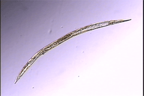
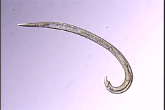

Acrobeloides bodenheimeri
Strain PS2160
Virtual specimens prepared by Melissa Yoder
Click on the appropriate thumbnail image to select the relevant specimen.

Adult Female

Adult Male
copyright 2002